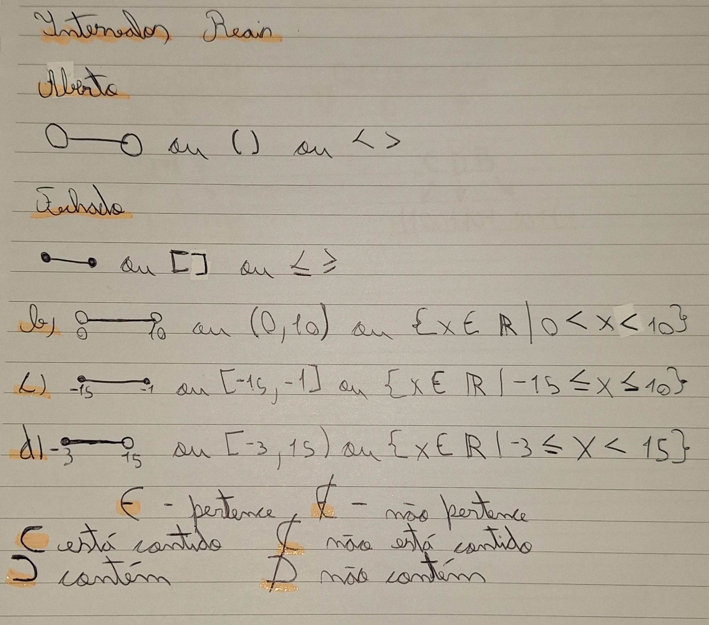

Intervalos Reais
- Como funciona
Nunca tinha ouvido falar em intervalos reais antes dessa aula, nem das regras de parênteses e conchetes, tampouco a equação utilizada que me remeteu muito aos algoritmos de JAVA. Mesmo sendo uma novidade, não tive dificuldade na compreensão pois já venho desenvolvendo esse pensamento lógico estudando algoritmos.
Para explicar os intervalos reais vou utilizar minhas anotações do caderno, pois é mais visual.

Próximo Tópico